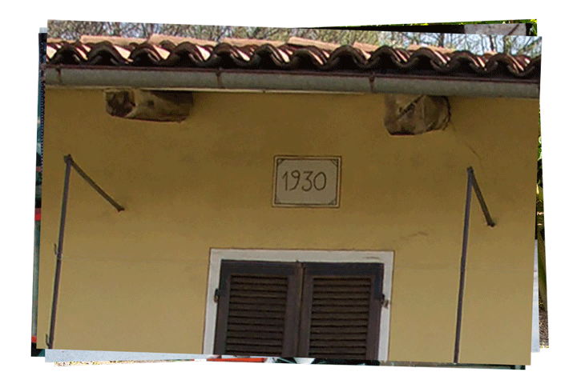
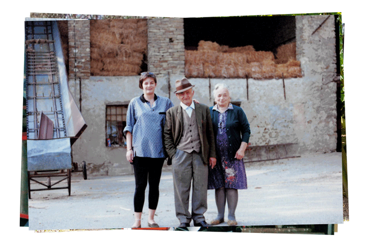
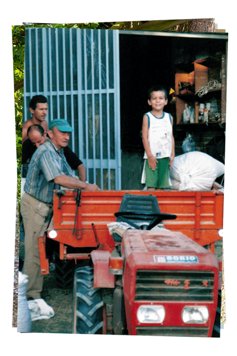
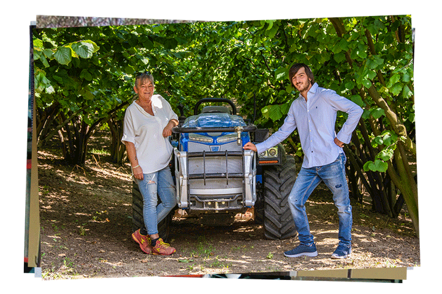

Tutto ebbe inizio quando Luigi, bisnonno di Andreas anche chiamato “il paneturot” (piccolo panettiere in piemontese), lasciò il lavoro di panettiere per dedicarsi alla coltivazione della sua amata terra attorno alla casa, di cui si prendeva cura la moglie Teresa, a Serravalle Langhe. Al tempo la terra era prevalentemente coltivata a grano, mais, foraggio per gli animali e alcuni filari di viti dai quali si ricavava il vino da consumare in famiglia. In quegli anni la coltivazione del nocciolo era ristretta a piccoli appezzamenti particolarmente irti e scoscesi dove non si poteva coltivare altro.

Dettaglio della facciata che riporta l'anno di costruzione

Luigi e Teresa con la nipote Loredana
Intorno agli anni ’60 Luigi, con il figlio Giovanni, decise di sostituire il piccolo vigneto, posto sul terreno alle spalle della casa, con un noccioleto. La raccolta delle nocciole in quel periodo era ancora del tutto manuale quindi faticosa ed impegnativa, ma anche un’esperienza famigliare indimenticabile in quanto si chiamavano a raccolta molti parenti per dare una mano rendendo così l'esperienza un'occasione di festa e risate. Teresa, mentre tutti erano al lavoro nei campi, dava il meglio di sé in cucina proponendo piatti fantastici ed in particolare un ragù il cui profumo si diffondeva in ogni ambiente della casa e che è un ricordo indelebile di chi ha vissuto quegli anni.
Queste abitudini non cambiarono per anni fino ad arrivare al 1994: l’alluvione che colpì la zona non risparmiò i nostri campi portando via il lavoro di una vita. Proprio in questa occasione Giovanni, nonno di Andreas anche chiamato Gianni, prese la situazione in mano decidendo di credere in questi terreni acquistandone dei nuovi e ponendoci a dimora nuove piantine di nocciolo. Gli abitanti del paese osservavano increduli l’incessante sforzo di Gianni che, imperterrito, completò l’opera grazie al prezioso aiuto della moglie Carla.

Giovanni con il genero Flavio e il nipote Andreas

Loredana e il figlio Andreas
La scommessa di Gianni e Carla è vinta: sono riusciti a valorizzare la loro terra nonostante tutto e tutti. Però i loro successi non finiscono qui: hanno saputo trasmettere i principi che hanno guidato prima di loro Luigi e Teresa alla figlia Loredana
e con lei al nipote Andreas. Quello stesso nipotino, che sin da piccolo li aiutava, oggi, poco più che ventenne, ha deciso di investire in queste terre sempre spinto dagli stessi valori: rispetto per la natura e amore per la terra.
«Nonostante io non abbia avuto modo di conoscere a fondo il mio bisnonno Luigi lo riconosco ogni giorno a vegliare sul nostro lavoro dalle sue due piante secolari che oggi sono il simbolo dell'essenza stessa di questa attività:
valori tanto forti da superare un secolo di storia.»
Azienda agricola Andreas Morra | P. iva 03815860048
Via Monastero, 1, Loc. Quazzo, 12050 Serravalle Langhe CN
Tel.: +39-3279947784 | Rif. comm.: +39-3331601545
e-mail: a.agricolamorra@gmail.com
Realizzato da Pietro Cagnasso | Foto di Giacomo Gatto